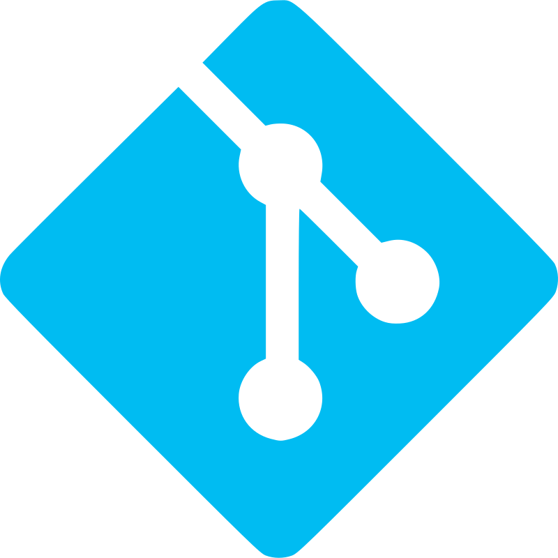

Hello! I'm José Teodosio Lorente Vallecillos, a passionate computer engineer and software developer with a solid academic background and practical experience in various exciting projects. Let me share more about my education, skills, and what drives me in and outside the world of technology.
Education
-
Degree in Computer Engineering
Technical School of Computer Engineering and Telecommunications, Granada, Spain
2018 - 2024
During my university years, I gained in-depth knowledge in key areas such as algorithms, object-oriented programming, web development, artificial intelligence, and more. I actively participated in challenging projects that allowed me to apply theoretical skills in real-world situations.
Skills
Programming Languages:


Python
C/C++
Java
JavaScript
CSS
HTML
PHP
Ruby
Flutter
Dart
SQL
MySQL

Git
Technologies and Tools:


Linux
PyTorch
Docker
OpenCV
OpenGL
About Me
Passionate about problem-solving and creative software development, I am always seeking new opportunities to learn and grow. My focus goes beyond code; I look for innovative solutions that positively impact user experience and the industry as a whole.
Thank you for visiting my portfolio. If you have any questions or an interesting project, I'd love to hear from you!